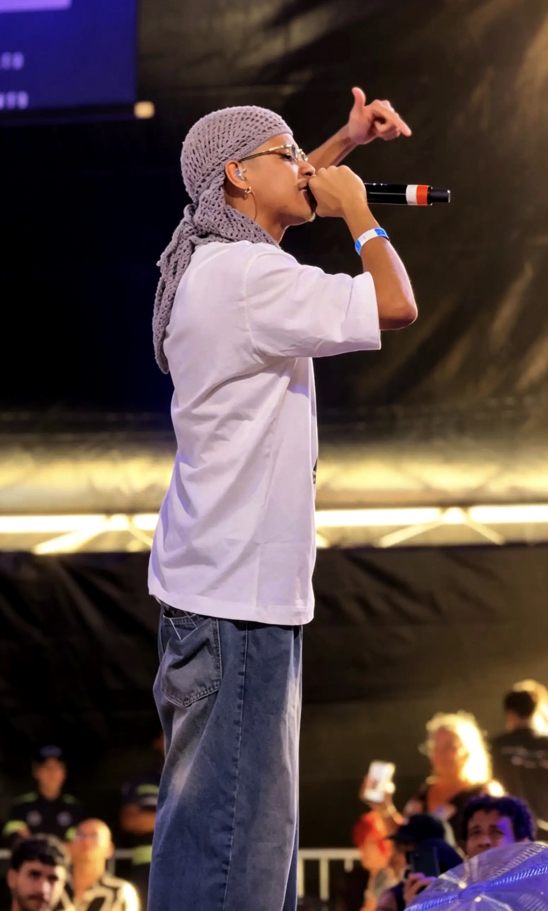
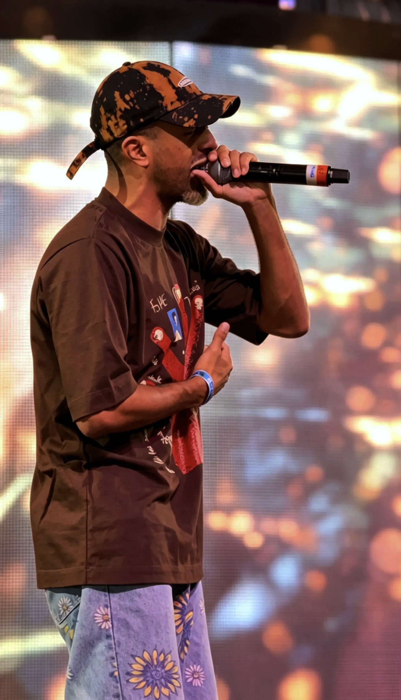
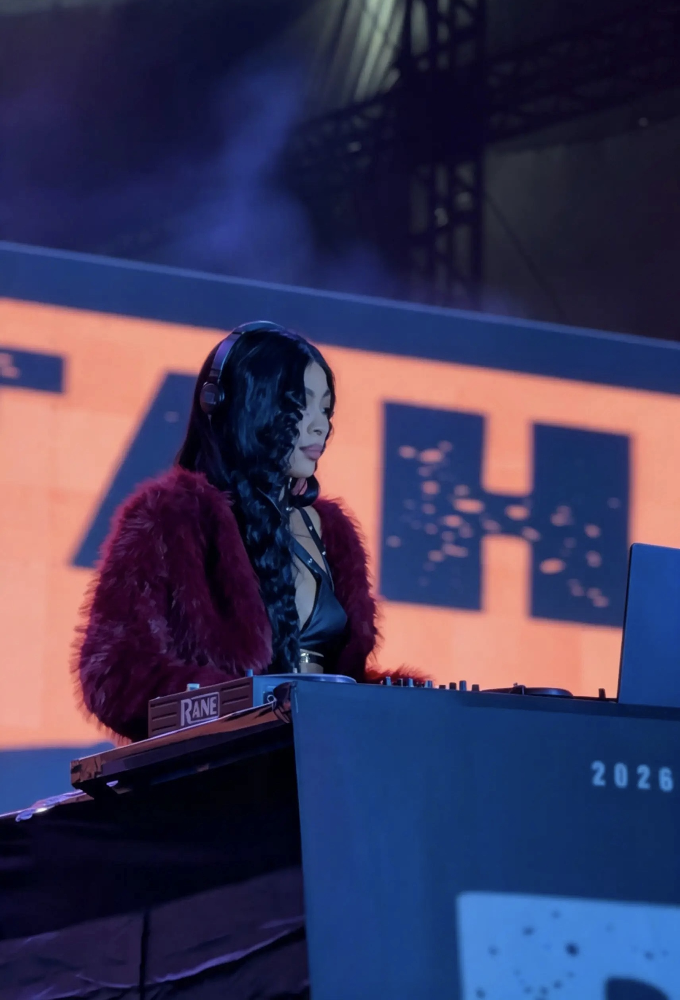
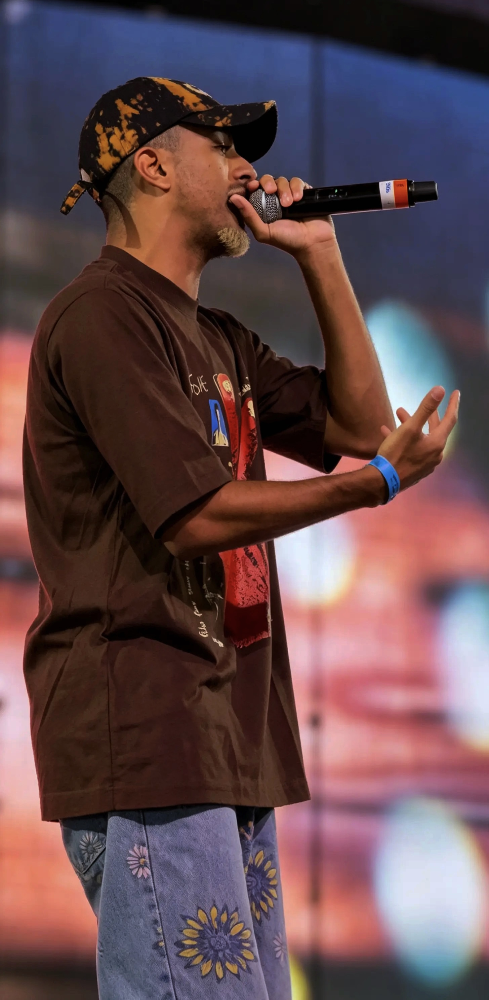
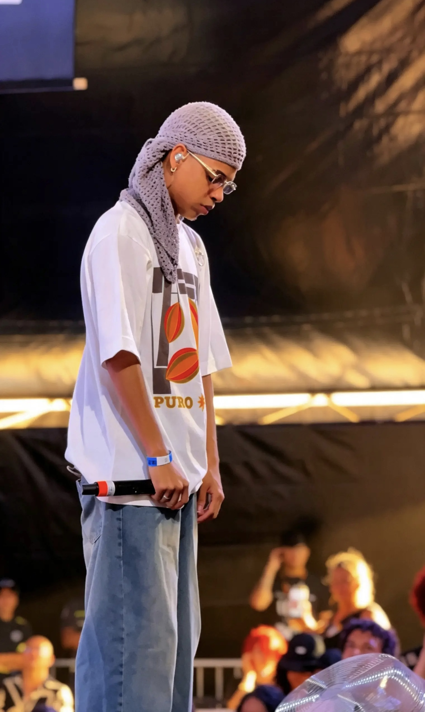
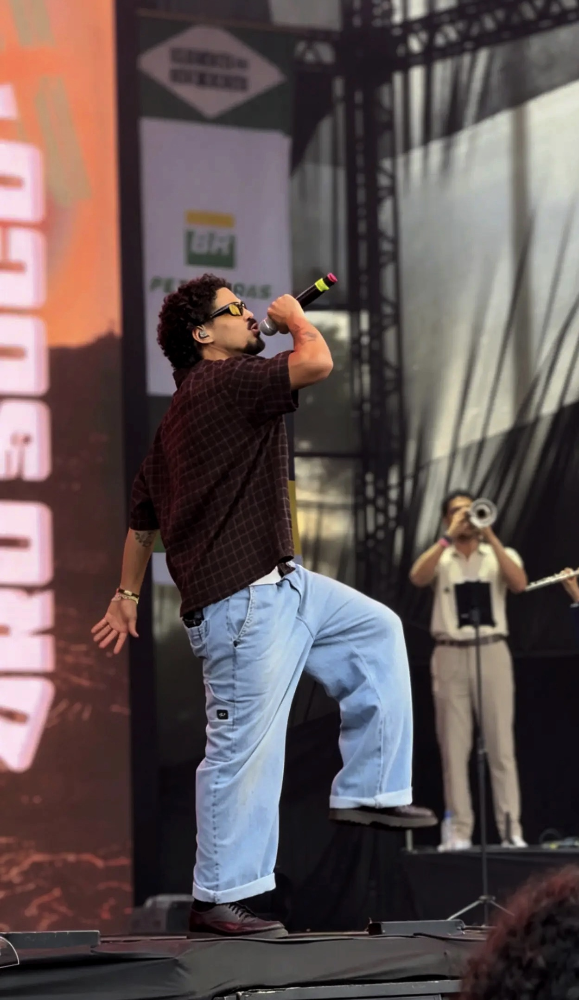
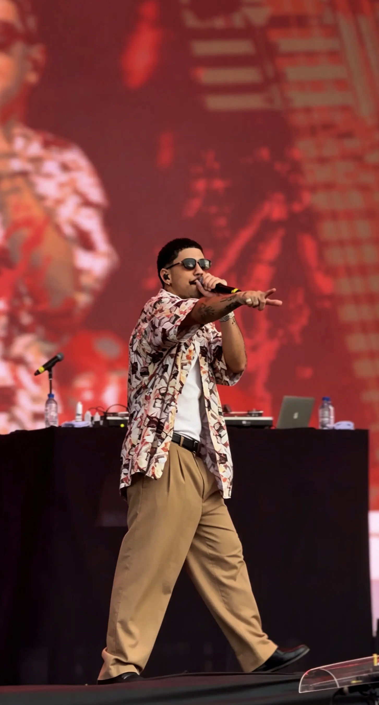

01 / PERCEPÇÃO
TODO MUNDO PODE GRAVAR.
MAS NEM TODO MUNDO
ENXERGA COMO EU.
O trabalho começa antes do REC.
ROLE PARA ENTRAR NO MEU OLHAR ↓
EU
VEJO.
VEJO.
O MOVIMENTO
O DETALHE
QUE ESCOLHO NO MEIO DO TODO.
A HISTÓRIA
ANTES MESMO DA EDIÇÃO.
02 / ELEMENTO EM MOVIMENTO
QUANDO TUDO
ESTÁ ACONTECENDO,
É AQUI QUE EU OLHO.
Palco, luz, expressão, gesto, pausa. Cobertura é escolher em segundos o que vai continuar existindo depois que o momento passar.
RECEVENTO / MOVIMENTOISABELLY BARBOSA
03 / FRAMES
UM MESMO EVENTO.
SETE DECISÕES DE OLHAR.







04 / ENQUADRAMENTO
O QUADRO NÃO É
UM FORMATO.
É UMA ESCOLHA.
9:16
+
9:16 → 1:1 → 16:9 / CONTINUE ROLANDO
05 / O QUE EU ENXERGUEI
O QUE ACONTECEU.
Um ambiente inteiro. Pessoas. Luz. Movimento. Informação.
O QUE MERECIA SER VISTO →
O QUE EU ENXERGUEI.
UMA HISTÓRIA DENTRO DA CENA.
06 / ANTES DO POST
O OLHAR ESCOLHE.
O MOVIMENTO CONECTA.
FRAGMENTO 01
FRAGMENTO 02
ÀS VEZES A MELHOR IDEIA...
É QUEBRAR
O ROTEIRO.
07 / FIM DO QUADRO
AGORA VOCÊ VIU
COMO EU ENXERGO.
Me dê algo para contar.
COMEÇAR UM PROJETO ↗ VOLTAR AO PORTFÓLIO